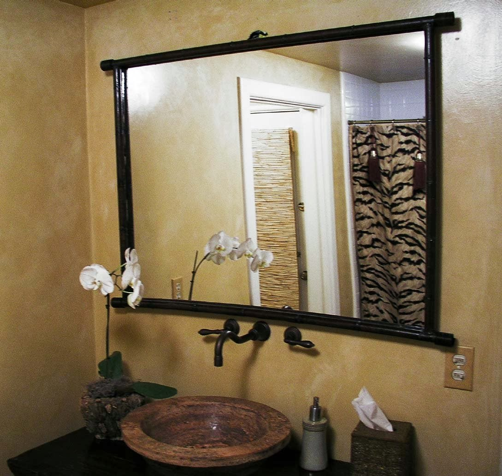

Kaca yakni salah satu material rumah yang pasti senantiasa ada, utamanya sebagai jendela. Kita sering kali menemui material-material hal yang demikian pada gedung, kantor, industry malah rumah hunian. Kaca juga awam diaplikasikan sebagai material untuk pintu, furnitur, railing tangga, shower box, kanopi, table top, dan malah panel dinding.
Sekarang sudah hadir pelbagai maca ragam kaca yang bisa ditemui, setiap kaca mempunyai fungsinya masing-masing. Bisa untuk system keamanan, estetika dan masih banyak yang bisa di temukan dari pemasangan kaca. Variasi kaca-kaca tersebut diantaranya ialah kaca tempered, kanopi kaca, kaca frameless, kaca cermin, railing kaca dan masih banyak ragam kaca lainnya yang bisa anda dapatakan dan anda aplikasikan pada bangunan. Segala material hal yang demikian dapat di aplikasikan harga sebuah hunian nampak lebih indah nyaman dan juga aman.
Distributor & Supplier Partisi Kaca di Kupang
Partisi kaca sudah diaplikasikan dimana saja. Tak cuma sebagai pembatas di mall, hotel, atau kantor-kantor saja, melainkan juga diterapkan sebagai sekat ruangan di rumah hunian. Telah banyak properti yang mengaplikasikan bahan berupa kaca sebagai partisi. Anda lihat di perbelanjaan modern, hotel, dan juga perkantoran. itu, juga tak memakan waktu sehingga Anda bisa menghembat pemasangan. Dalam hal ini, Anda mesti tahu variasi kaca apa yang baik untuk partisi. Kecuali itu, tentukan juga desainnya apakah partisi kaca Kupang hal yang demikian frameless (tanpa pigura) atau dengan pigura. Selain itu, pertimbangkan juga privacy. Ini yang akan membikin Anda mempertimbangkan hal yang pas apakah Anda menggunakan kaca transparan, semi transparan, atau kaca cermin. sekali partisi ini lebih hemat ketimbang pembatas berupa tembok yang terbuat dari batu bata, pasir, dan juga semen. Lain seandainya Anda memilih menerapkan partisi kaca. Bahan ini lebih murah dan mudah dalam pemasangan. Anda bisa memakai partisi kaca Kupang ini sebagai penyekat ruangan seperti kamar mandi dalam, taman dalam ruangan, ruangan bermain di dalam rumah, dan lain sebagainya. Dis.or.id pelbagai kaca penyekat yang kualitasnya terbaik. Partisi kaca dengan kwalitas terbaik dan berkualitas dapat anda di dis.or.id. Disana anda bisa partisi kaca dengan harga yang amat terjangkau. Disana anda akan menerima partisi kaca yang dengan harapan anda.
Info Pemesanan Selengkapnaya
Google Maps: https://www.google.com/maps/d/viewer?mid=1R8kzChlMY2QK17rdE2QwzgHqdyqkVgbb&ll=-7.27380280025364%2C112.65243155000007&z=18
Note: https://www.facebook.com/notes/distributor-of-industrial-supply/pabrik-supplier-partisi-kaca-kamar-mandi-kantor-r-tamu-dlsb/1785723915060821/
Event: https://www.facebook.com/events/538733799826380/
Distributor & Supplier Kaca Shower

Penyekat ini akan memisahkan antara tempat berair yang digunakan untuk mandi atau meletakan shower dan tempat lain yang merupakan area kering. Kalau pemasangannya juga betul-betul gampang dilaksanakan dan tak membutuhkan waktu yang lama. Di samping pintu kaca shower akan membikin kamar mandi kecil kelihatan lebih besar. Kita tidak perlu repot lagi mencari tukang sendiri karena pemasangan alat sekat ini memang membutuhkan teknik tersendiri.
Dis.or.id menyediakan kaca shower dengan kualitas premium sehingga ketika dipasang akan lantas terlihat mewah. Disana anda dapat menerima kaca shower yang pastinya sesuai untuk kamar mandi anda. Tak terbaik dan harga terjangkau.
Distributor, Supplier & Jasa Pasang Kanopi Kaca
Banyak macam kaca kanopi yang diaplikasikan sebagai atap, tak hanya satu ragam saja. Seiring dengan perkembangan zaman di dunia properti, kini kanopi kaca terlah berkembang pesat mengikuti arsitektur modern . Dan sensasi mandi menjadi lebih asik untuk dinikmati. Cara ini memang desain shower berbahan kaca memang lebih banyak diaplikasikan daripada desain shower berbahan tirai. Jikalau tembus pandang, kaca menyerap cahaya yang masuk sehingga semakin tebal kaca maka kian sedikit sinar yang bisa melaluinya, karenanya sifat transparannya makin berkurang.|Di samping pintu kaca shower akan membuat kamar mandi kecil nampak lebih besar.
Kini anda bisa menerima kanopi kaca dengan mutu terbaik dan juga berkwalitas di dis.or.id. Ini nampak dari bahan material yang di pakai dalam pembuatan kanopi kaca. Seandainya itu, kanopi juga bisa melindungi mobil dan kendaraan lain anda.
Jasa Maintenance Kaca

Jasa maintenance kaca yakni perusahaan yang akan membantu agar gedung perkantoran Anda tampak seperti baru. Kaca amat memerlukan perawatan sebab tiap-tiap hari terkena sinar sang surya atau juga hujan. Kecuali cuma membersihkan kaca, jasa maintenance kaca juga bisa mengerjakan pembetulan.
Dengan memakai bahan pembersih yang akan membuat kaca nampak bersih seperti pertama kali dipasang. Lebih dari itu, Sekiranya pakar yang dimilik oleh dis.or.id juga bisa membetulkan kaca yang rusak.
Tidak anda sedang membutuhkan jasa maintenance kaca, anda bisa lantas mengunjungi dis.or.id. Disana anda bisa memanfaatkan jasa maintenance kaca dengan tenaga ahli yang kapabel membersihkan gedung kaca dengan produk pembersih kaca apa yang terbaik untuk menghilangkan kotoran dan kusam. Dis.or.id juga telah mempersiapkan dengan bermacam alat yang bisa digunakan untuk menjangkau seluruh sudut gedung, sekalipun gedung Anda sangat tinggi. Oleh karena itu, dis.or.id hanya memilih orang-orang yang sangat profesional dan sudah mempunyai pengalaman dalam hal maintenance kaca. Dengan telah memberikan training terhadap tenaga spesialis sehingga mereka sudah dapat mengerjakan pekerjaan mereka dengan amat bagus.
Jasa Pemasangan Kaca Tempered
Tak anda mebutuhkan jasa maintenance kaca, anda dapat mengunjungi dis.or.id. Semakin banyak orang yang berharap mengaplikasikan kaca ini. Masyarakat sudah paham keunggulan dari kaca ini. Kaca tipe Tempered memiliki tenaga 4-5 kali lebih baik diperbandingkan kaca umum dengan ketebalan yang sama. Banyak komponen properti yang dapat dibuat dengan bahan berupa kaca tempered. Sekarang, semakin banyak properti yang menerapkan kaca tempered.
Banyak hal yang bisa dilakukakn kaca tempered ini salah satunya sebagai pembatas, untuk kamar mandi dan masih banyak lagi. Disana anda dapat memanfaatkan jasa pemasangan kaca tempered untuk seluruh tipe bidang maupun bangunan. Bila aman kaca tempered juga kapabel memberikan kesan keindahan yang amat bagus diperbandingkan dengan kata tipe lainnya. Harga yang ditawarkan untuk pemasangan kaca tempered betul-betul murah.
Distributor & Supplier Pintu Kaca

Cara ini banyak figur pintu seperti cocok dengan ada di bayang-bayang Anda. Banyak orang yang lebih suka dengan figur pintu kaca minimalis, merupakan pintu kaca frameless. Tersedia juga aluminium dan kayu kalau Anda mau mempunyai pintu kaca dengan pigura. Tenaga tipe kaca yang dapat Anda pilih untuk pintu kaca Anda seperti kaca tempered yang sedang booming atau kaca non-tempered yang harganya lebih terjangkau. Tersedia sebagian tipe kaca dengan mutu yang terbaik, mulai dari kaca tempered sampai yang non-tempered. Kini tidak keok penting lagi yaitu pemilihan kaca. Dalam hal ini, terdapat sebagian variasi kaca dengan kualitas yang terbaik. Kini paling banyak diminati dikala ini ialah kaca tempered sebab jauh lebih kuat dan tahan lama.
Anda dapat mempunyai pintu kaca favorit anda sekarang juga dengan mengunjungi dis.or.id. Bila ahli yang sungguh-sungguh profesional sehingga sungguh-sungguh siap untuk menghasilkan pintu kaca seperti apa yang berharap Anda miliki.
Kaca yang di pakai yaitu kaca dengan kwalitas terbaik. Dis.or.id mempunyai kekuatan yang sudah betul-betul profesional di bidang ini.
Jual Kaca Cermin

Kaca cermin sekarang memiliki desain yang berbeda. Ini tidak hanya sebagai kaca cermin persegi. kaca cermin biasa diterapkan pada bukaan pintu atau jendela dinding luar, yang nantinya diharapkan berpenampilan mewah pada bangunan. Banyak produsen kaca cermin yang membikin dengan desain yang berbeda. Ada cermin persegi yang ditempelkan beraturan, cermin berbentuk seperti daun, dan lain sebagainya. Pun, ada juga desain kaca cermin yang unik. Jadi, Anda bisa sesuaikan desainnya dengan desain ruangan yang akan Anda pilih untuk menempatkan cermin hal yang demikian. Sementara itu, dikala dipandang dari luar, kaca ini reflektif. Anda seolah sedang bercermin.
Akan melainkan, ada juga pilihan lain berupa kaca cermin yang berbingkai. Tidak saja, desainnya saja yang dirubah. Atau Anda dapat memilih cermin yang dibangkai dengan berjenis-jenis macam bahan seperti kayu, aluminum, plastik, dan bahan lainnya. Karenanya hanya persegi atau persegi panjang. Sementara itu, Anda yang berada di dalam ruangan dapat mengamati orang lain yang ada di luar.
Jasa Pemasangan Railing Kaca
Railing kaca kini kian banyak opsinya. Mungkin hal ini disebabkan kian banyak pemilik rumah yang mau menonjolkan sebuah desain interior rumah yang benar-benar minimalis. Malah juga bagian pegangan atau piguranya. Ada banyak pilihan desain railing kaca yang bisa Anda pilih, dengan ukuran serta bahan yang berbeda. Namun, bukan cuma model yang sebaiknya Anda jadikan pertimbangan dikala berharap mengorder railing kaca ini. Malahan juga bahan yang dipakai.
Dalam hal ini, Anda dapat menetapkan sendiri berapa ketebalan dari kaca yang digunakan tersebut. Anda bisa memilih kaca tempered sebagai bahan utamanya. Ada kaca tempered yang kini diminati banyak orang. Kalau kaca, observasi juga aluminum yang menjadi piguranya. Kini pasti, railing kaca ini menjadi alternatif yang tepat. Seandainya memberikan kesan minimalis pada interior rumah, ini juga membikin rumah Anda tampak lebih nyaman untuk dibuat daerah tinggal.
Sekarang dis.or.id telah menyediakan railing kaca berkulitas dan bermutu.
Distributor & Supplier Pintu Lipat Kaca

Kaca tempered juga dapat diterapkan untuk pintu lipat kaca. Jadi, bahan ini tidak cuma untuk pintu saja. Lalu, berapakah harganya? Anda mungkin mengira bahwasannya kaca ini ditawarkan dengan harga selangit. Tipe kaca nomor 6 ini sangat disarankan untuk dijadikan sebagai bahan membikin pintu lipat kaca.
Tidak hanya itu, pintu lipat kaca bisa Anda pasang di kamar lantai atas yang ada balkon. Banyak pertimbangan yang membikin Anda pasti yakin untuk memilih kaca tempered ketimbang ragam kaca yang lainnya. Namun, pastikan Anda memesan pintu kaca lipat yang dilengkapi dengan aksesoris yang berkualitas, dan yang lebih-lebih aksesoris berupa hinges. Hinges adalah aksesoris yang penting karena hinges inilah yang menopang berat pintu kaca Anda.
Jasa Pemasangan Kubikel Toilet

Dulu, kamar mandi hanya disekat oleh penyekat yang berbahan kayu, jarang sekali yang mengaplikasikan bahan lain. Kubikel kamar kecil yakni kaca pembatas yang digunakan pada WC.
Anda juga dapat membuat toilet di space yang lebih kecil dan tak memerlukan lahan yang demikian itu besar untuk membikin toilet yang banyak. Jikalau anda sedang membutuhkan kubikel kamar mandi, anda bisa segera mengunjungi laman dis.or.id. Sekiranya anda beratensi untuk memiliki kubikel kamar kecil, anda bisa segera mengunjungi dis.or.id.
Keuntungan dari sekat kaca memberikan yaitu dapat memberikan efek luas karena ruangan tersekat tetapi secara visual tak.